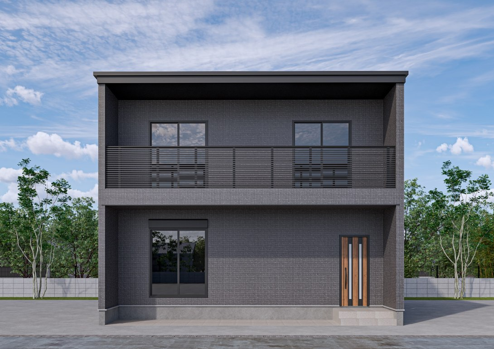
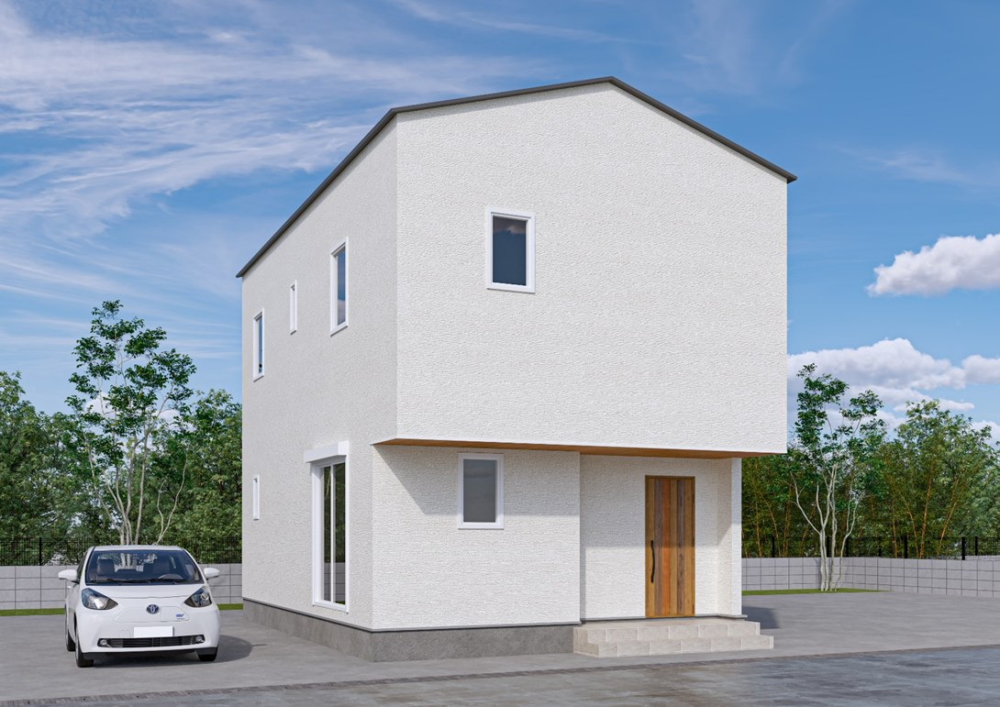
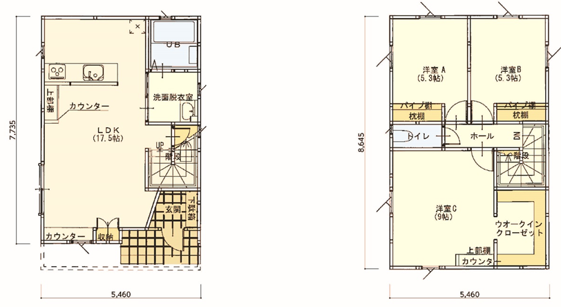
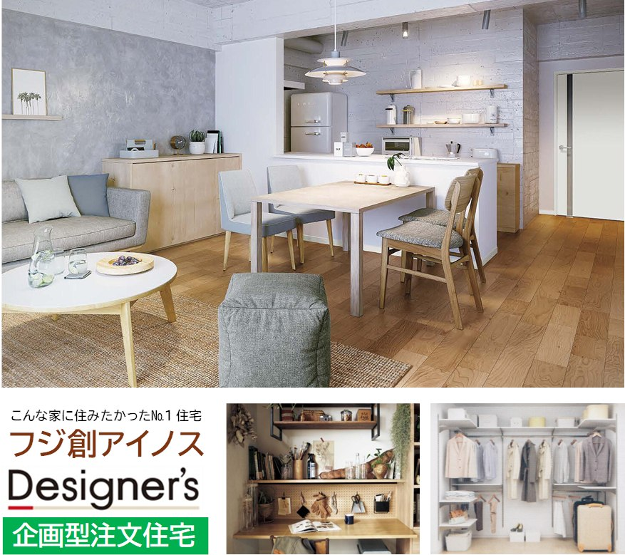
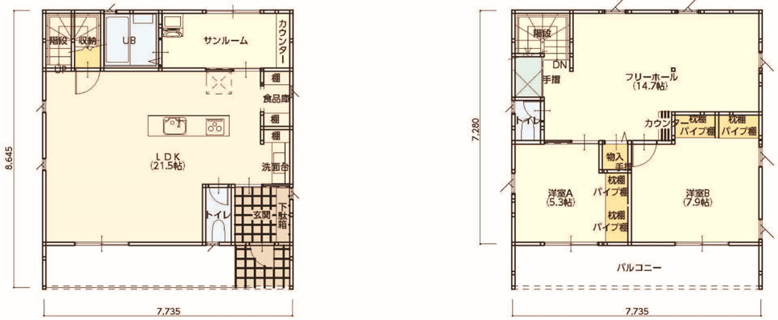
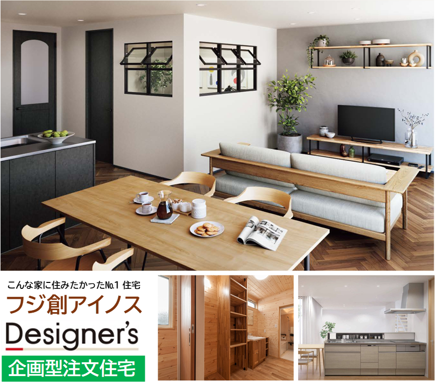

全3種類
COMPACT / REFINED
Ainos Smart
賢く選ぶ、ちょうど良い家。コンパクトな住まいに、仕事・学習・収納・家事の機能を無理なく整えた設計です。
詳しく見る →TWO-STORY HOUSE
限られた敷地を有効に使い、家族の時間と一人ひとりの居場所を整える。耐震性と省エネ性能を備えた、永く安心して暮らせる住まいです。


コンパクトで機能的な「Ainos Smart」と、光と風を取り込み上質な空間をつくる「Ainos Premium」。暮らし方やご希望に合わせてお選びいただけます。
LINEUP
暮らしの広さとこだわりから選べます。
AINOS SMART / LAYERED
LDKにはスタディとワークの両方に使える2つのカウンターを設置。主寝室にはウォークインクローゼットとカウンターを組み合わせ、毎日の使いやすさに細やかに配慮しました。


数値・設備は商品紹介の内容です。地域・間取り・窓等で条件が変わるため、採用仕様と計算書で確認します。保証は初期期間と延長条件を分けてご案内します。性能・標準仕様の確認 ／ 保証の条件
Smartのプランをもっと見る ↗AINOS PREMIUM / DOBBY
日射しを取り込む大きな窓と広々としたLDKに、アイランドキッチンを配置。サンルームを兼ねた脱衣室や多機能カウンター、独立洗面台まわりの収納が家事を支えます。


数値・設備は商品紹介の内容です。地域・間取り・窓等で条件が変わるため、採用仕様と計算書で確認します。保証は初期期間と延長条件を分けてご案内します。性能・標準仕様の確認 ／ 保証の条件
Premiumのプランをもっと見る ↗WORKS
１ページ目は住宅の考え方と仕様、２ページ目は2階建ての間取りと価格をご覧いただけます。
仕様や費用、完成後の保証をご確認いただけます。
PLAN CONSULTATION
敷地やご予算、必要な部屋数に合わせて、掲載していないプランもご提案します。まずは今の暮らしやご希望をお聞かせください。
土地・建物の費用と自己資金から、借入額と毎月の返済額の目安を試算できます。
住宅ローン返済シミュレーション